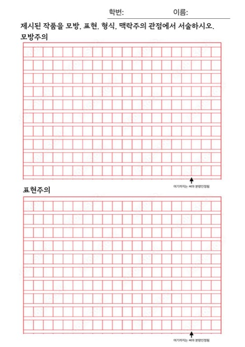
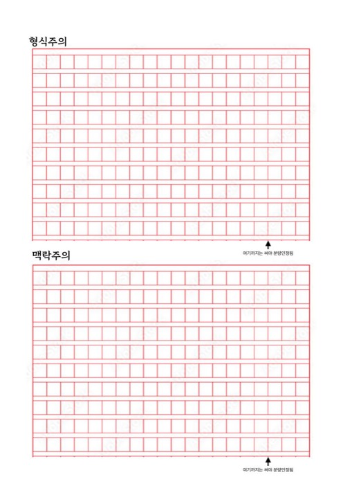

내려받아 인쇄하고, 손으로 써 보세요


4가지 관점 수행평가지
A4 두 쪽, 관점마다 원고지 한 칸씩. 칸마다 ‘여기까지는 써야 분량 인정’ 선이 있습니다. 평가 날에는 선생님이 나눠 주니, 이 파일은 연습용입니다.
평가지 쓰는 법
- 영어·숫자는 한 칸에 두 글자, 문장 부호는 한 칸에 하나.
- 첫 칸만 띄어 쓰고, 그다음은 계속 붙여 씁니다.
- 맞춤법은 채점하지 않아요. 관점에 맞춘 근거가 핵심.
- 필기도구는 자유(빨간색 제외). 글씨는 또박또박!
제출 전 자기 점검표
- 모방주의 — 대상을 나타낸 방식을 작품 속 근거를 들어 썼나요?
- 표현주의 — 작가의 의도와 내 느낌을 구별해 썼나요?
- 형식주의 — 조형 요소·원리를 두 가지 이상 쓰고, 효과까지 썼나요?
- 맥락주의 — 시대·사회 배경과 작품의 의미를 이어 썼나요?
- 관점마다 분량 인정선까지 썼나요?
- 학번과 이름을 썼나요?